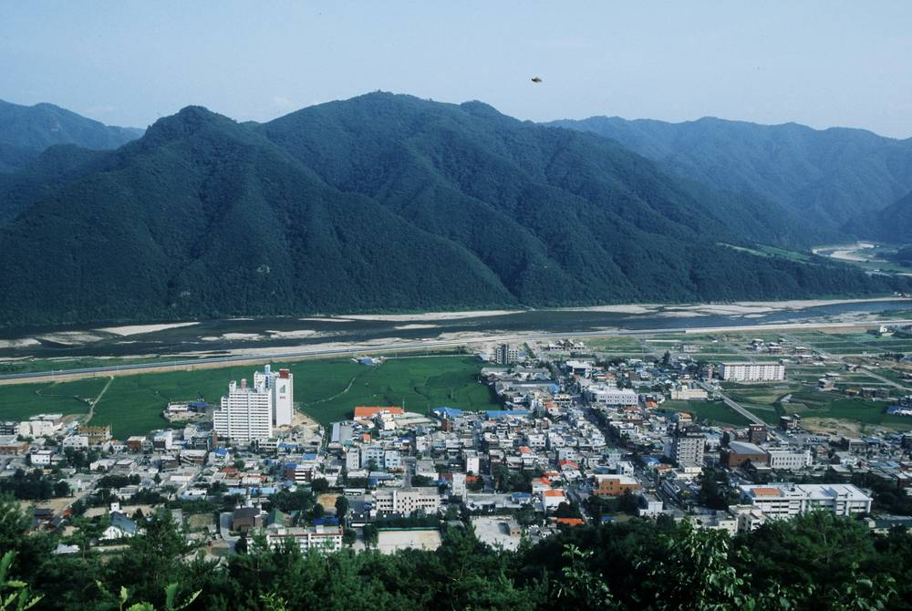

강원 9개 시·군 19개 마을, 햇빛소득마을 3차 공모 도전…12월 결과 발표

1·2차 공모에서 도내 46곳 이미 선정…행안부 "3차에서 전국 200곳 이상 마을공동체 지원"
강원도 9개 시·군에서 19개 마을이 2026년 햇빛소득마을 3차 공모에 신청서를 내고 결과를 기다리고 있다. 지난달 30일 마감한 이번 공모의 최종 결과는 행정안전부가 12월 중 발표할 예정이다. 햇빛소득마을은 주민이 협동조합을 꾸려 태양광 등 재생에너지 발전소를 직접 짓고, 전기를 팔아 얻은 수익을 마을이 함께 나누는 사업이다. 강원에서는 앞선 1·2차 공모에서 이미 46개 마을이 뽑혔다. 행안부는 이번 3차 공모에서 전국 200곳 이상의 마을공동체를 지원하겠다고 밝혔고, 강원도는 선정 규모가 확정되는 대로 행정 지원을 집중해 사업 속도를 높인다는 계획이다.
시민에너지 관점
강원에서만 46곳이 이미 뽑혔고 19곳이 더 도전한다는 것은 농산촌 주민들이 에너지를 새 소득원으로 받아들이기 시작했다는 뜻이다. 다만 앞선 2차 선정 때 도내 42곳 가운데 41곳이 전력망 여유가 없어 조건부로 승인됐던 만큼, 선정 숫자가 곧 발전소 숫자는 아니다. 덴마크가 한때 풍력 단지 지분의 20%를 지역 주민에게 먼저 내놓도록 해 반대를 소득으로 바꿨듯, 주민이 소유한 발전소는 지역 수용성을 높이는 가장 확실한 길이다. 강원도와 한전은 3차 결과 발표 전에 도내 계통 여유를 마을별로 공개하고, 선정 즉시 착공할 수 있는 접속 계획을 함께 내놓아야 한다.
출처: 강원도민일보 2026-11-12 김정호 원문 보기
江原道の9市郡・19の村が「日差し所得村」3次公募に挑戦…12月に結果発表
1・2次公募で道内46カ所がすでに選定…行政安全部「3次で全国200カ所以上の村の共同体を支援」
韓国・江原道の9つの市・郡で19の村が、2026年の「日差し所得村（햇빛소득마을）」3次公募に申請し、結果を待っている。先月30日に締め切られた今回の公募の最終結果は、行政安全部が12月中に発表する予定だ。日差し所得村は、住民が協同組合をつくって太陽光など再生可能エネルギーの発電所を自ら建て、電力を売って得た収益を村で分け合う事業だ。江原道ではこれまでの1・2次公募で、すでに46の村が選ばれている。行政安全部は今回の3次公募で全国200カ所以上の村の共同体を支援すると明らかにしており、江原道は選定規模が確定し次第、行政支援を集中して事業のスピードを上げる計画だ。
市民エネルギーの視点
江原道だけで46カ所がすでに選ばれ、さらに19カ所が挑戦するということは、農山村の住民がエネルギーを新たな収入源として受け入れ始めたことを意味する。ただし、先の2次選定では道内42カ所のうち41カ所が送電網に余裕がないため条件付きで承認されており、選定数がそのまま発電所の数になるわけではない。デンマークがかつて風力発電所の持ち分の20%をまず地元住民に提供させ、反対を収入に変えたように、住民が所有する発電所は地域の受容性を高める最も確かな道だ。江原道と韓国電力は3次の結果発表前に道内の系統の余裕を村ごとに公開し、選定後すぐ着工できる接続計画を合わせて示すべきだ。
出典: 강원도민일보 2026-11-12 김정호 原文を読む
江原道9个市郡19个村挑战"阳光收入村"第三批招募…12月公布结果
第一、二批中道内已有46个村入选…行政安全部："第三批将支持全国200个以上村庄共同体"
韩国江原道9个市、郡的19个村已申请2026年"阳光收入村（햇빛소득마을）"第三批公开招募，正在等待结果。本次招募已于上月30日截止，行政安全部预计在12月公布最终结果。阳光收入村项目由居民组建合作社，自行建设光伏等可再生能源电站，并由全村共享售电收益。在此前的第一、二批招募中，江原道已有46个村入选。行政安全部表示，第三批将支持全国200个以上的村庄共同体；江原道则计划在入选规模确定后集中提供行政支持，加快项目进度。
市民能源视角
仅江原道就已有46个村入选、另有19个村继续挑战，说明山区农村居民已开始把能源视为新的收入来源。但在此前第二批选拔中，道内42个村有41个因电网余量不足而获有条件批准，入选数量并不等于电站数量。正如丹麦曾要求风电场先向当地居民出让20%股份，把反对转化为收入，居民所有的电站是提高地方接受度最可靠的途径。江原道和韩国电力公社应在第三批结果公布前按村公开道内电网余量，并同时拿出入选后即可开工的并网计划。
来源: 강원도민일보 2026-11-12 김정호 查看原文
19 Villages in Nine Gangwon Counties Apply for Third Round of Korea's "Sunlight Income Village" Program; Results Due in December
46 villages in the province were already selected in the first two rounds; ministry says third round will support more than 200 communities nationwide
Nineteen villages in nine cities and counties of Gangwon Province have applied for the third round of the 2026 "Sunlight Income Village" program and are awaiting results. The Ministry of the Interior and Safety plans to announce the final selections in December for the round, which closed on October 30. Under the program, residents form a cooperative to build solar and other renewable power plants themselves and share the revenue from electricity sales across the village. Gangwon already had 46 villages selected in the first two rounds. The ministry has said it will support more than 200 village communities nationwide in the third round, and the provincial government plans to concentrate administrative support to speed up projects once the selection size is confirmed.
Citizen Energy View
With 46 villages already selected in Gangwon alone and 19 more applying, rural residents are clearly beginning to see energy as a new source of income. But since 41 of the province's 42 second-round villages were approved only conditionally for lack of grid capacity, the number selected is not the number of power plants built. Just as Denmark once required wind farms to offer 20% of their shares to local residents first, turning opposition into income, resident-owned power plants are the surest way to win local acceptance. Gangwon Province and KEPCO should publish grid headroom village by village before the third-round results and present connection plans that let selected villages break ground immediately.
Source: 강원도민일보 2026-11-12 김정호 Read the original